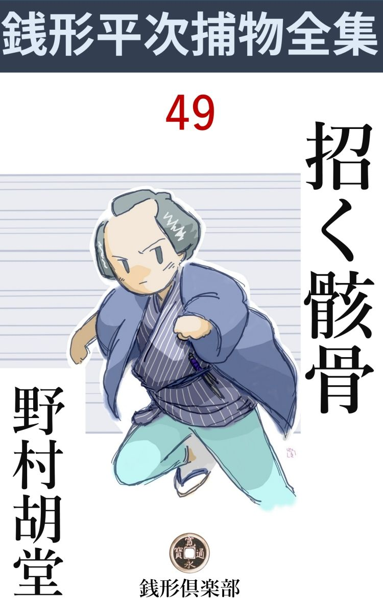
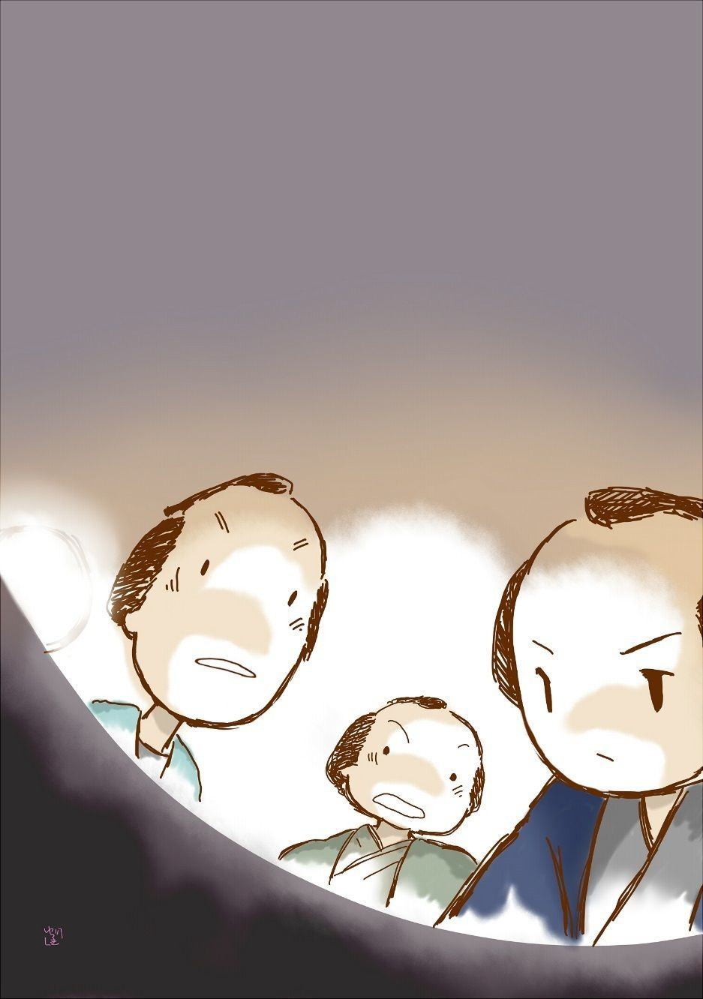

| 招く骸骨: 銭形平次捕物全集第49話 (銭形倶楽部) | |
| 野村胡堂 | |
| ZENIGATA CLUB (2018) | |

一
「親分、笑っちゃいけませんよ」
「嫌な野郎だな、俺の面 を見てニヤニヤしながら、いきなり笑っちゃいけねえ------とはどういうわけだ」
銭形平次とガラッ八の八五郎は、しばらく御用の合間を、こう暢気な心持で、間抜けな掛合い噺 のような事を言っているのが、何よりの骨休めだったのです。
「親分にお願いしてくれ------って言うんだが、化物退治じゃねえ」
「化物退治は洒落 れているね。場所はどこだい」
「金沢町の升屋なんで」
「両替屋の升屋かい」
「そうですよ。------升屋のお内儀が、銭形の親分さんの御機嫌の宜い時、そっとお願いして見てくれ。詳しい事は、いずれお目に掛ってお話するけれど------って」
「馬鹿だなア。岡っ引に化物退治を頼む奴があるものか。------そんな口なら、岩見重太郎の方へ持って行くが宜い」
銭形平次は、こんな事を言うのです。
「その岩見重太郎ってえのは、どこの岡っ引で？」
「ハッハッハッハッ、こいつは秀逸 だ。岩見重太郎が驚くぜ、岡っ引と間違えられちゃ」
「だって、あっしはまだ、岩見重太郎なんて野郎に逢ったこともありませんよ」
「そうだろうとも、俺も逢ったような気はしねえ」
「へッ、呆れたもんだ」
どこまで行っても話は軌道 に乗りません。
「だがね八。升屋には一体どんな化物が出るんだ」
平次はようやく真面目になります。化物退治も暇なときには満更でないと思ったのでしょう。
「化物だか幽霊だか知りませんが、升屋では三月ほど前から変なものが出て、奉公人が居つかなくて困るそうですよ。主人の由兵衛も心配はしているが、商人に似合わぬしっかり者で、こんな事が世間へ知れちゃ、商売にも障るだろうし、神田草分けと言われる升屋の暖簾 にも関わるから、なるべく人に聞かせたくねえ------とこう言うんだそうで」
「成程。升屋の主人の言いそうな事だ」
「------多分狸か狐の悪戯 だろう。捕 めえた者には褒美をやると言うんだそうで」
「フーム」
「ところが、その化物は、おそろしく人見知りをして、主人夫婦と一番番頭の金蔵が寝泊りをしている、奥の離室へは出るが、多勢の奉公人のいる、店の方へは気振 も見せないんだそうですよ」
「贅沢な化物じゃないか」
「主人の由兵衛はあの気象だから、お内儀が閉口して、店の方へ行って休もうと言っても、どうしてもきかねえ。------子供だましの化物騒ぎに脅 かされて、七年間も寝起きをした離室を明け渡すのは、町人の恥だてんで------」
「町人の恥は嬉しいな」
平次はまだ少し茶化しながら、それでも次第にこの話に引入れられる様子です。
「一体、この世の中に、化物や幽霊はあるものでしょうか、ないものでしょうか、親分」
「俺は化物や幽霊に附き合いはねえ。そんな事は横町の手習師匠にでも聞くが宜い」
「でも、出るのは確かですよ。お内儀は何べんも見たって言うんだから」
「出るだろうよ。俺はそのエテ物に、足が二本あるか、四本あるか、知りたい」
「じゃ、升屋へ乗込みましょう。主人もお内儀も喜びますよ」
「止そうよ。化物退治は気が乗らねえ。が、主人かお内儀に逢ったら、これだけの事を言っておくが宜い。------エテ物は離室を明けさせたい様子だから、一晩店へ引揚げて、様子を見るが宜かろう、------用心が悪いと思うなら、あまり物を怖 がらない番頭を一人泊めるように------と」
「そう言って来ましょう」
ガラッ八の八五郎は、そのまま飛出しました。この馬鹿馬鹿しい化物騒ぎが、平次が今まで経験したことのないほど、不気味な恐ろしい事件の発端になろうとはもとより知る由もありません。
二
翌る日、升屋の主人由兵衛は、お内儀のお蔦 といっしょに、銭形平次の小さい家を訪ねて来ました。
「折入って親分にお願いすることがあって、もったいないが、明神様へ朝詣りということにして参りましたよ」
由兵衛は苦笑します。年輩三十五六、デップリ脂 の乗った、柔和な顔立ちも、穏やかなうちに品のある物言いも、神田の草分け、江戸両替番組世話役の貫禄に申分ありません。
「これは、升屋の旦那。化物が暴れ出しましたか」
平次は何か予期している様子です。
「それなんですよ、親分。私はもう怖くて怖くて、あんな家に住む気がしません」
お内儀のお蔦はつつしみを忘れて、夫の後ろから口を添えました。三十そこそこでしょうが、昔左褄 を取ったことがあるとかで、抜群の年増ぶりです。少し青白い面長、商売人上りらしい活々した大きい眼、歌舞伎役者のような表情的な身のこなしなど、妙に病的な魅力を感じさせる種類の女でした。
「始めから順序を立てて仰しゃって下さい」
銭形平次はにこやかにそれを受けました。神経の尖り切った女には、こうするより外に術 はありません。
筋を進める前に、少しばかり、その頃の両替制度と、升屋の家格を説明すると宜いのですが、話が固くなりますから、これはほんの概略 に止めておきます。
その頃、江戸の両替屋は六百軒と限られ、三十幾組に分れて、江戸の金 融 機関になっていたもので、その組織は非常に複雑を極めます。大別すると本 両替と銭 両替とあり、資力の大きく、家格の良いのは、大名や商人の金融、金銀為替 などを扱い、上納金の検査や、金銀相場立て、新旧貨幣の交換引揚げ、単純な両替すなわち貨幣の交換まで、いろいろと仕事があったわけです。
升屋は番組両替の世話役で、代々金沢町に住み、三井や竹原、中井、村田の本両替屋に次ぐ家格。すなわち金銀を店名の包 封 のまま通用させる、江戸九軒の大両替屋の一軒だったのです。
先代は徳五郎と言いましたが、七年前、川崎へ行ったまま行方不明になり、持物は品川の海へ浮んでいたので、網船でも出して溺 れたのだろう、ということになりました。
内儀のお蔦は一年孤閨 を守った上、親類方の相談で、支配人をしていた、主人 の義理の甥由兵衛に嫁 合 せ、升屋の身上は、小揺ぎもなく立って行きました。その間に、子飼いの番頭の与市が、お蔦に気があって大騒動をしたり、それからぐれはじめて、さんざん道楽をした揚句、贋金を使って遠島になりましたが、事件が店の外で起ったのと、升屋の顔がよかった上、相当以上の金を使ったので、店には何の疵 もつかず、簡単なお叱りだけで事済みになったことがあります。それももう六年前の出来事で、銭形平次も、徳五郎の失踪と与市の処刑を朧気 に記憶しているだけの事でした。
「この化物騒ぎは三月ばかり前からですが、どうにもこうにも、お話になりません。屋根の上へ石が降ったり、女共が雪 隠 へ行くと、箒で顔を撫で廻したり、髪の毛がサラサラと障子に触ったり------、毎晩怪談噺の仕掛けのような事が起るのです。あんまり馬鹿馬鹿しいから気にも留めずにおりますが、家内が気に病んで、とうとう親分のお耳に入れたそうで------」
「------」
平次のまじめな顔を、少し極り悪そうに見ながら、由兵衛はつづけました。
「ゆうべは親分の言いつけなすった通り、私共夫婦だけ母屋 へ寝て、離室の方を番頭の金蔵に任せておきました。すると、夜中に得体の知れない者が忍び込んで、年寄の金蔵を、足腰の立たないほど殴って行ったんです。そんな荒っぽい化物は世の中にあるでしょうか、親分」
「化物の殴り込みというわけですね」
平次は苦笑しました。
「何しろ金蔵は、六十三という歳ですから、気だけは勝っていても、化物と組討ちをする柄じゃございません。縁側で眼を廻しているのを下女が見つけて、一応の手当てはしましたが、何を訊いても夢のようだと申します」
「雨戸は？」
「一枚はずれておりました」
「化物もさすがに節穴からは通れなかったでしょう」
と平次。
「馬鹿馬鹿しいと思いながらも、これじゃやり きれません。女房の臆病に附き合うようですが、親分の知恵でも拝借したらと思いましてね」
由兵衛は仕様ことなしに笑っております。
「私が行って見るのはワケもありませんが、岡っ引の姿を見ると、鳥が逃げてしまいます。明神様には済まないが、朝詣りということにして、ここへそっと寄って下すったのは、宜いことでした。------ところで、お店の奉公人は、幾人位ありましょう」
「金蔵を始め、番頭手代小僧まで十七人、それに下女が三人、飯 炊 きが一人」
「多勢ですね。その中で、三月か四月前に来たのはありませんか、化物の悪戯 の始まる頃------」
「私もその辺に気がつきましたが、生憎 丸一年勤めているのが、一番の新米で、金蔵などは四十七年もいるそうです。------もっとも、この三月の出代りに暇を取るのや出すのは三人ほどありますが」
昔の奉公人は三月が出代り、それまであと十日とありません。
「それじゃ、今晩は奉公人のうちで一番気の強いのを、一人だけ離室へ寝かして見て下さい。二朱か一分の褒美を出したら、進んで離室の番をしようと言うものがあるでしょう」
「又怪我をされると困りますが------」
「大丈夫ですよ、私も後でそっと覗きますから。------もっともこれは言っちゃいけません」
三
その晩平次は、お勝手口からそっと升屋の母家に忍び込みました。案内してくれたのは主人の由兵衛。子刻 過ぎの店中は、さすがに寝静まって、コトリとも音がしません。
「離室へ寝ているのは？」
平次は廊下に立ってささやきます。
「治助------という男で」
「強いんですね」
「平常 は至って弱い男ですよ、------褒美を一両出すが、離室へ行って寝る者はないかと言うと、誰よりも先に名乗って出ました」
「お店に何年くらいいるでしょう」
「二年くらいになるでしょうか。二十七八の、よく働く男ですよ」
主人の由兵衛はこう言いながら、離室の方へ案内します。真っ暗な廊下を足 捜 りで、馴れない平次には音を立てまいと思うのが一と難儀です。
「この三月の出代りに、その男も出されるんでしょう」
「その通りですよ親分。よく働くには働きますが、身元が判 然 しないのと、人柄はよいが、仲間の受けがよくないので、三月には帰すことになっております」
「化物が忙しくなったわけですね」
「へエ------」
主人は判らないながら、平次へ相槌 を打っております。
「おや？」
由兵衛は立止りました。雨戸が一枚開いて、縁側には梅の蕾 をふくら ませる、柔かな風が吹込んでいるのです。
まだ月は出ませんが、庭には、揺 ぐ仄 明 り。
「シーッ」
平次は由兵衛の袂を押えました。ここで何か言い出されては、何もかもいけなくなってしまいます。
「治助は床の中にいない様子です」
「------」
平次はそれに応えず、黙って外を指しました。
「あッ」
離室の裏、少し荒れた窓寄りの辺 を、一生懸命掘り下げている二人の人影があったのです。
「黙って」
平次は由兵衛の驚きを押えるのが精一杯でした。
「小さい方が治助です」
「一人は相棒でしょう」
「何を掘る積りでしょう？」
「シッ」
窓の外の二人は掘る手を休めて、腰を伸しました。土の上へ、横においた泥 棒 龕 燈 の灯 は、塀に反射して、覚束なくも二人の顔を照します。
治助というのは、なるほど三十には間があるでしょう。少し華著に見える男ですが、こんなのが案外な強 か者かも判りません。もう一人は四十前後、凄まじい青 髯 で、頬冠りを取って汗を拭いたところを見ると、山賊の小頭が戸惑いして飛込んだ------と言った男です。
「あとはもう楽だ。一尺も掘ると、その下は土蔵を壊した時の、壁土や瓦 や貫 や木 舞 が投げ込んであるというから------」
治助の声でした。
「------」
それを聴いた、由兵衛の顔は見物でした。
「何を呆れていなさるんで------、旦那」
平次はこう訊かずにはいられません。
「井戸を埋めたのは六七年前のことですよ。それを新参者の治助が知っているのはおかしいじゃありませんか」
由兵衛の言うのはもっともです。離室の窓の下、何の変化もない踏み固めた場所から、昔の井戸を捜し出すのは、いずれ仔細のあることでしょう。
「縛ってしまいましょうか」
平次はこれ以上井戸掘を見ているのが馬鹿馬鹿しいような気がしました。飛出して縛り上げた上、二人の口を開かせ、それから井戸を掘って見ても遅くはありません。
「も少し見ていましょう。------井戸はどうせ一間とはありません。二人で掘れば、二 刻 ともかからないでしょう」
「二た刻？」
「何が出て来るか、楽しみじゃありませんか」
側に平次がいるせいもあるでしょう。由兵衛はすっかり落着いて、井戸の中から、金の茶 釜 でも出てくるのを見ていたい様子です。
四
治助が言った通り、一尺ほどの下は木舞 やガラクタが主 で、何のわけもなく井戸は掘下げられます。
「早くしようぜ。兄哥」
「心得てるよ。夜明けまでに掘り出して、裏木戸からズラかりゃ宜いだろう」
二人は予 て用意した道具で、骨身を惜まず働きました。
由兵衛と平次は、息を殺してその作業を見守りました。丑 刻 が鳴り、寅刻 が鳴ると、治助はさすがに疲れた様子ですが、外から呼んだ青髯の相棒は、労働には馴れている様子で、ほとんど疲れを知らぬ人間のように、根気よく掘りつづけます。
「変なものがあるぜ、兄哥、灯を見せてくれないか」
井戸の中で、ガラクタを取りのけていた青髯が言うと、
「それよ------」
上から治助が、龕 燈 の灯先を向けてやりました。
「わッ」
「た、大変ッ」
龕燈を差し向けた治助も、井戸の中の青髯も、一ぺんに声をあげます。何様、容易ならぬ物を見たのでしょう。
「兄哥、一人で逃げちゃ殺生だ。------待ってくれ」
「逃げるものか、------そんなものは片づけて、その下を見るが宜い」
「俺はもう御免だ。代るから、こんどは兄哥が入って見てくれ」
青髯はとうとう、たまりかねて井戸からはい出します。
「今更そんな気の弱い事を言っちゃ困るじゃないか。大事な品は多分その下にあるんだろう。ノコノコ這い出して来やがると、無事じゃおかねえよ」
治助の手にはキラリと何やら光ります。多分脅かしの匕 首 でしょうが、こうなると、青髯の凄まじい男よりは、華奢な治助の方が、遥かに悪党らしい様子です。
「兄哥、勘弁してくんな。俺はもうイヤだ。------大きな声を出すぜ」
「馬鹿野郎。------仕様のねえ人足だ。今引上げてやるから、待っていろ」
そう言いながら治助は、闇の中にそっと匕首を構えます。井戸の中から上って来る相棒を一と突きにして、その臆病な口を封じた上、自分で中の秘密を捜る積りでしょう。
がしかし、こうなると平次も放っておけません。由兵衛と顔を見合せると、
「御用ッ」
パッと飛出しざま、治助の利腕 を殴りました。
「あッ、何をしやがるッ」
匕首を叩き落されて、拾いにかかると、加勢に飛込んだ主人の由兵衛、咄嗟 のまに、その匕首を蹴飛ばします。
「神妙にせい」
平次の馴れた手は、早くも治助を取って押えましたが、同時に、井戸から飛出した青髯、由兵衛をドンと一と突き、疾風の如く裏木戸から飛出すのを、
「どっこい、待っていたぞ」
闇から生れたようなガラッ八の八五郎、一流の糞力 に、青髯の後ろから、無 手 と羽掻締にしてしまいました。
五
「何だ何だ」
「又化物が暴れ出したのか」
「それ行って見ろ」
母屋から五六人、心張棒、天秤 棒 から、長押 の槍まで持出して、バラバラと飛んで来ました。夜は明けかけている上に、多勢となると、馬鹿に威勢がよかったのです。
「おや、旦那」
「平次親分も」
そこに展開された、ふしぎな事件に、飛出して来た奉公人達も、しばらくは呆気に取られるばかり。
「大急ぎで灯を持って来てくれ」
主人の由兵衛はようやく我に還 ると、さっそく指図役に廻ります。大立廻りの時龕燈は消えて、薄明るい暁の光りでは、井戸の中までは見えなかったのです。
「へエ------」
持って来たのは提灯と手燭と、有明の行燈、掘り下げた井戸の三方からいっぺんに差出されました。
凄まじい好奇心が、口火を点じた煙硝 のように燃え上がります。
「あッ」

驚きの声が、多勢の口を衝いて出ました。井戸の底にあるのは、------燦 たる大判小判？------いやそんな生優しいものではありません。薄黒い着物に包まれた骸骨、------黄灰色 に濁った、世にも浅ましい人間の死骸だったのです。
「わッ」
番頭達も、主人の由兵衛も、思わず弾 き飛ばされたように飛び退きました。先刻井戸の中の青髯が悲鳴を挙げて這い出そうとしたのも、全く無理はありません。
「誰か手を貸して貰いたいが」
さすがに平次は一番落着いておりました。一とわたり驚きの納まるのを見ると、こう言いながら、集った人数の顔を読みます。
「------」
誰も返事をする者はありません。
「八、どうだ」
「やりますよ」
ガラッ八はさすがにいやとは言いません。
「梯子 が一挺、莚 が一枚、------仏様を乗っけて四隅へ縄を通して吊り上げるんだから、丈夫なのが宜い」
平次の言葉に勢いを得、番頭達はようやく動き始めます。
井戸から引上げた死体は、想像以上に不気味なものでした。肉 漿 と泥とに、着物は生 昆布 のように濡れて、縞目も判りませんが、左の胸へは脇差が一本、深々と突っ立って、赤 錆 に錆びております。
肉は殆んど落ちて、乾いた壁や土や木舞 の中に埋まっていただけに、申分のない曝 されようですが、その代り、人相の鑑定の付けようはありません。
「かなり大きな男には違いないが------さて、誰だろう」
平次は四方 を見廻しました。恐ろしい沈黙と動乱の世界も、少しずつ明るくなって、不気味な骸骨の眼が、みんなを睨み据えているようでもあります。
「心当りがあったら言う方が宜い。こんなにされちゃ誰だって浮ばれまい。それ、真っ黒な眼がみんなを見ているじゃないか」
平次はつづけて言いました。
「銭形の親分さん、------この死骸が誰か、私にはよく解ります」
身体の痛いのを我慢して、この時にようやく這出して来た老番頭の金蔵です。
「番頭さんか、お前さんは年頭 だ、若しやと思う事があったら言うが宜い」
「若しや------どころじゃございません。これは七年前に行方知れずになられた、先代の大旦那に相違ありません」
老番頭金蔵は言い切りました。
「間違いはあるまいな。番頭さん」
「それはもう、先代の旦那様のお守りをしながら奉公した私で御座います」
「証拠はあるだろうね」
「第一、この胸に刺した脇差 は、行方不知 になった時差していなすった品でございます。それから、着物に凝った方で、------この古渡 唐 棧 は、汚れてはおりますが、よく存じております。それに、背恰好、左足首に骨まで通った切瘡------これは若い頃の悪戯 の祟りで、お守の私がうんと叱られました」
「------」
「それに、この井戸を埋めたのは土蔵を建て直した年で、ちょうど七年前、先代の旦那が行方不知 になった年でございます。------浅い井戸で水が悪くて使わずにいたのへ、職人が邪魔な物を投り込むので、与市------これは遠島になった番頭でございますが、その男が言いつけて、とうとう埋めてしまいました」
金蔵の思い出はそれからそれと涯 もありません。
「先代の旦那が行方不知 になった時、この井戸は見なかったのかい」
と平次。
「一応は覗きましたが、半分埋まった井戸の底を掘る気にはなりませんでした。何しろ、品川の海から、旦那の脇差の鞘だの、腰 下 だの、下駄だの、いろいろな物が見つかったので------」
「品川の海から身についた品物が上がったのに、七年経ってから、屋敷内の井戸から死骸が出たのはおかしいじゃないか」
「へエ------」
平次の鋭い疑問も、老番頭には何の意味もない言葉でした。
「旦那。どんなものでしょう」
平次はさり気ない顔で由兵衛を見上げました。
「私には何にも解りません」
先刻まで、井戸を掘るのを、あんなに面白がって眺めていた由兵衛の顔は、鉛 のように真っ青です。
「先代が行方知れずになった頃、旦那はどこにいました」
「ここにいましたよ」
平次はそれっきり口を緘 みました。先代徳五郎の身代を継いだ上、その美しい後 家 と一年後には一緒になった由兵衛は、罠 の中に陥 込 んだ獣のように、あがき ようのない、恐ろしい境遇におかれたことを自覚しないわけには行きません。
川崎へ行ったきり帰らずに、品川の海で死んだことになっておればこそ、その日一日店から動かない由兵衛には、何の疑いも掛らなかったのですが、先代徳五郎が、金沢町の自分の家の、庭で殺されたとなると、話がまるっきり違います。
由兵衛が青くなったのも、頓 には口も利けないのも、全く無理のないことでした。
六
「親分、何だって由兵衛を縛らなかったんで？」
治助と青髯を番所へ引いて行く途中、たまりかねて八五郎は訊きました。
「七年前のことだ。あれだけの証拠じゃ縛れない。------それに、こいつらが井戸を掘っている時、由兵衛は平気な顔をしていたよ。------いや、平気どころじゃない、面白がって眺めていたくらいだ。井戸の中に自分の殺した死骸があると知っていちゃ、どんなに大胆な人間でも、あんな暢気 な顔は出来るものじゃない」
「成程ね」
「それに、この二人を縛る時は手を貸して、俺の危ういところを助けたり、灯を番頭の手から取って井戸を覗いたり、------どうしても下 手 人 と思えない事をしている。あの井戸が窓の下にあるのに、離室に平気で五六年も寝起きをしているのもおかしいじゃないか」
「へエ------。そう言ったものかな」
ガラッ八はまだ腑に落ちない様子ですが、平次にそう言われると、強いて抗 うほどの知恵もありません。
「安心するが宜い。升屋は万両分限 で、神田一番の両替屋だ。身に覚えがあってもなくても、由兵衛は逃げも隠れもすまい。------その上、あれだけの女房があっちゃ」
「好い女ですね、親分。元は芸者だと言うが」
「左手の小指が半分から先ないだろう。------柳橋から出ている頃、起誓 代 りに切ったのさ。一生懸命隠してはいるが------」
「へッ、へッ、お安くねえ内儀 だ」
ガラッ八はペロリと舌を出しました。
番所へ行くと、事件があまり変っているのと、升屋の家格が大 袈 裟 なので、奉行所へ出かける前、与力の笹野新三郎が見廻って来ておりました。
「平次、大変な事があったそうだな」
「お早う御座います。------全く大変なことで、あっし も途方に暮れました。死体が見つかったんですから、下手人を捜 さなきゃなりませんが、何分七年も前の事じゃ------」
「まア、諦めたもんじゃあるまい。その井戸掘りをやった、二人を調べて見よう」
「それよりほかに工夫も御座いません」
「当って見るが宜い」
笹野新三郎は、鷹揚に頷いて上がり框 に腰をおろしました。
「手前達は、何だってあんな仏様を掘り出したんだ。お上には御慈悲がある、手数を掛けずに言ってしまったらどうだ」
八五郎に縄尻を掴ませて、平次は二人の前へ立ちました。町奉行の御白洲は型ばかりで、下調べは大抵こうして埒 を明けたのです。
「金があると思いましたよ。------何しろ小判で三千両と言うから------」
青髯の男は、思いのほか軽口で、ペラペラとやります。
「黙っていろ」
治助はジロリと凄い三白眼 を見せました。
「兄哥 、こうなっちゃ言った方がいいぜ。三月越しお化けの真似をした上、ちょいと井戸掘りをやらかしたほかに、大した悪事もしなかったじゃないか」
青髯は他愛もありません。
「言って宜きゃ、俺が言うよ。------」
「それは良い料見だ。なア治助、島帰りはそれ位の度胸がなきゃア、悪党仲間へ顔向けがなるめえ」
「へッへッ、よく御存じで、銭形の親分」
「額の入墨を、刃物で切り取ってあるじゃないか。子供の時庭で転んで、切石に額を打っつけた------とでも言うんだろう」
「成程ね。親分は見透しだ。みんな器用にブチまけましょう」
治助はすっかり諦めた様子で、ボツボツ語り始めました。
「打たれたり叩かれたりして、口を割るあっしじゃねえが、笹野の旦那と銭形の親分が揃っちゃ、重忠様が二人だ。不 貞 腐 れるだけが野暮でしょうよ。------なにを隠しましょう、あっしはお小姓の治郎助で------」
「何？ お小姓の治郎助？ それが手代に化けて、二年も我慢したのか」
平次が驚いたのも無理はありません。お小姓の治郎助というのは、武家の出だとも、役者崩れだとも言われる、名題の悪党で、海道筋を縄張に、宿から宿と荒し廻る忍 の名人だったのです。
「だらしのねえ恰好で、お目通りをして、面目次第もありません。------お小姓の治郎助が、井戸掘りの真似をしたんだから、笑ってやって下さい。実は親分」
「------」
お小姓の治郎助の白状は怪奇を極めました。駿府で捕って、三宅島へ流されたのは四年前、そこで端なくも、五年前に贋金使いで島へ流された、元の升屋の番頭、与市と懇意になったのが、そもそもこの事件の発 端 でした。
それから一年ばかり経って、与市は、傷寒 で死にましたが、臨終という時治郎助を枕辺に呼んで、
------江戸へ行ったら、金沢町の升屋へ入り込んで、離室の窓の前にある、古井戸を掘って見るが宜い。一間ばかり掘ると小判で三千両の金が出て来る筈だ。------それは新 鋳 の通用金と、旧鋳の金を換える時、そっと用意した贋金と摺り換え、真物の小判を三千両も貯めて、井戸の底に隠したのだ。俺はもう助かる見込みはない、これを言わないと心残りがして、冥 土 の障りになる。形見にやるから、掘出して遣ってくれ------。
と、こう言ったのです。
「島から許されて帰ると、大金を掛けて手蔓 を拵え、二年前に升屋へ入り込んだが、どうしても井戸を掘る隙がねえ。そのうちに素性がバレそうになって、この三月にはお払箱と決ったから、大急ぎでこの青髯の竹の野郎を仲間に引入れ、化物騒ぎをして離室を明けさせようと企らんだが、主人の由兵衛は確り者で、少しも怖がらねえ。------昨夜はようやく井戸を掘って、大願成就 と思うとこの始末だ。銭形の親分、面目次第もないが、これが掛値のねえ白状だ。お小姓の治郎助も、あれほど馬鹿にされようとは思わなかったよ」
少し不貞腐れますが、この言葉に嘘があろうとは思われません。笹野新三郎と銭形の平次は、何とはなしに顔を見合せました。
「平次、井戸の中には、確かに金はなかったろうな」
と笹野新三郎。
「それはもう間違いは御座いません」
「すると、島で死んだ与市とか言う番頭が、治郎助を使って、井戸を掘らせたのは？」
「死体を掘り出させるためで御座いましょう」
「何のためだ」
「讐 を討つためでございましょう。升屋の先代を殺した下手人に怨みがあって、それに思い知らせるために------」
平次の明察は次第に蘇 ります。
「そんな手数な事をするより、------井戸の中に死体がある。下手人は誰------と言ってしまった方がよいではないか」
「死体があると言っちゃ、治郎助が骨を折って出してくれません。------それに、島でそんな事を言ったところで、贋金使いの兇状持の言うのを誰が真に受けましょう」
「成程、そんな事もあるだろう。------与市が怨んでいる者と言うと------」
「与市は金蔵に次いで店中の幅利きで、内々升屋の身上 を覗っていた上、主人 の女房のお蔦 にも気があったそうです」
「すると？」
疑いは又もや、当主由兵衛の方へ、北を指す磁石 のように、極めて自然に、宿命的に向いて行きます。
「だから親分、あの時由兵衛を縛ったら------って言ったじゃありませんか」
八五郎は歯痒そうでした。
「手前 は黙っていろ」
平次は何時もに似気なく不機嫌です。
七
その日の夕方、ガラッ八は鉄砲玉のように飛んで来ました。
「親分、大変だ」
「何が大変なんだ。こんどは井戸から幽霊でも出たのかい」
平次は瞑想から呼び覚されて、この日本一のあわて者を迎えました。
「三輪の万七親分が乗出したんで」
「それがどうした」
「驚いちゃいけませんよ。親分、内儀のお蔦を縛って行きましたぜ」
「何だと、馬鹿野郎」
平次はガラッ八を叱り飛ばしているのでした。
「お蔦を縛ったのは、あっし じゃありませんぜ。三輪の万七とお神楽 の清吉で------」
「あの女が元の亭主を殺したと言うのか」
「何だか知らねえが、骸骨を入棺 しようとすると、されこうべの口から、噛み切った小指の骨がポロリと落ちたんで------」
「あッ」
「驚くでしょう親分。------内儀の左の手には小指がねえ、------ちょうど親分のアラ捜しにやって来た万七親分は、それを聴くと直ぐ内儀に縄を打った」
「よしッ、そんな馬鹿な事があるものか。もう一度行こう」
平次はガラッ八を追っ立てるように、升屋へ飛んで行きました。
升屋の中は恐ろしい事件の続発に怯えて、滅入 ったような陰惨さ。
「死骸の口から出た小指というのはここにあるだろうね」
平次は挨拶も忘れて、主人の由兵衛に訊ねました。
「これですよ、親分」
指したのは、経机 の上の小さい箱に入れた紙包 、------心忙しくひろげて見ると、
「何だ。こりゃ女の小指じゃねえ」
平次は少し拍子抜けがした様子です。
「私もそう思いました。それに、蔦が指を切ったのは、柳橋にいる頃で、もう十年も前のことです。三輪の親分にそう言っても、耳に入れてくれません」
由兵衛は平次の言葉に勢いを得て、急にこんな事を言うのです。
「心配なさることはありませんよ。お内儀さんは直ぐ返されるでしょう。------が、他にこの家に、指のない人はありませんか」
平次はその辺に寄って来る番頭達を眺めました。
「私はこの通りですが------」
由兵衛は十本満足に揃った、自分の指を見せながら続けました。
「ね、金蔵どん、------三宅島へ流された与市は？」
「左様でございます。私もそれを申上げようと思っておりました。与市は先代の旦那様が行方不知 になった頃、瘭瘡 をやったとか言って、外科で指を切ったように思いますが」
「そんな事があったね」
と由兵衛。
「どの指でしょう？」
「右手の薬指でしたよ。------書き物に不自由はないが、箸 を持つには困るとか言っておりましたから」
「与市は左利きでしたか」
「そんな事はありませんよ」
金蔵の記憶はたしかでした。
「念のため、もういちど治郎助と竹に逢って、与市の様子を聴いて来ましょう。右手の薬指というと少し話が変ってくる------旦那は番頭さん達と、御 通 夜 をして待っていて下さい。帰りにはお内儀さんも一緒かもわかりませんから」
平次は八丁堀へ飛びました。由兵徳と金蔵だけでなく、島で与市に逢った、治郎助からも指の事を確かめておきたかったのです。
「親分。あの指が与市のじゃ、無駄骨折りじゃありませんか」
「------」
「下手人が島で死んで、からかい面に死骸を掘らせたんでしょう」
ガラッ八は平次のうしろから、こんな事を言います。
「黙っていろ。筋はこれから面白くなるんだ」
「へエ------」
八
平次が八丁堀から升屋へ帰ったのは、その晩の丑 刻 過ぎでした。昨夜も一睡もしないのに、大した疲れた様子もなく、手掛けた事件を、一気に片づけようとするのでしょう。
お蔦は手続きが遅れて、今晩連れて来るわけには行かなかったそうですが、------
「その代り、素晴しい事を聞込みましたよ」
平次はこう言いながら、少し有頂天に手を揉んでおります。
「どんな話です。親分」
と由兵衛。
「治郎助が言うんです------与市は苦しい息の下から、------井戸の中には升屋が引くり返るような物があるが、あんまり吃 驚 してぞんざいに見るな。その品の下には、もう一つ、人一人の命に関 わる品があるぞ。大事な大事な証拠だ。そいつを忘れるな。あん畜生に思い知らせる品だ------ってこう言ったんだそうですよ」
「------」
「升屋が引くり返るような品というのは、この棺に納めた先代主人の骨に決っていますが、------人一人の命に関わる大事の品、あん畜生に思い知らせる証拠の品------と言うのは、いったい何でしょう」
「------」
「多分、下手人の落した、煙草入とか紙入のようなものでしょう。どうせ夜じゃ判るまいから、明日の朝捜すことにして、それまで私は、家へ帰ってひと寝入りして来ます。さようなら、お休みなさいまし」
平次は一人言のように言って、升屋から飄然 と立去りました。
九
それから一刻ばかり後。
升屋の店中はすっかり寝静まって、先代主人 の骸骨を納めた、離室の一室だけが明々と灯 っておりました。
平次が帰ると間もなく、雇人達はみんな下がって、残ったのは元気を恢復した老番頭の金蔵一人、これも薄寒いのと淋しいので、夥 しい徳利を並べた後は、他愛もなく眠りこけて、庭先にどんな事が起っているかも知りません。
フト黒い影が、離室の雨戸を離れると、掘荒した井戸の方へ、静かに近づいているのです。
時々足下 の大地を丸く照すのは、ゆうべ治郎助達が持っていた、泥 棒 龕 燈 でしょう。
黒い影がようやく穴の口に近づくと、要心深く踞 んで、泥棒龕燈を古井戸の底へ差向けました。
「あッ」
黒い影はのけ反らんばかりに驚きました。がしばらくすると、気を取直した様子で、もういちど井戸の底を覗いたのです。
中には、ゆうべ見た通り、------濡れ腐った着物に包まれた、凄まじい骸骨が一体、寒々と横たわっているではありませんか。
「------」
黒い影は全身を顫 わせて、バリバリと歯を噛み合せました。凄まじい恐怖を我慢している様子です。
「由兵衛」
どこからともなく、か細い不気味な声。
「馬鹿な」
黒い影は超人的な勇気を振り起して、もういちど井戸の中を覗きました。こうして自分の妄 想 を取払おうとしたのでしょう。が、底に横たわった骸骨はそのまま元の姿で、何の変りもなく、------いや、何の変りもなければ、黒い影は勇気と理性を取戻す道もあったでしょうが、このとき骸骨は、黄灰色 に曝 れた手を挙げて、ユラユラと井戸の上から覗く黒い影を招いたのです。
「由兵衛------来いよ」
黒い影は、その声を聞くと見事に引っくり返りました。
「わーッ、勘弁してくれ。------私が悪かった」
這い廻る黒い影の上へ、
「御用ッ」
いつの間にやら平次の手はかけられていたのです。
「親分、もう上がっても宜うがすかい」
井戸の中からはガラッ八の八五郎。骸骨の紙型を貼りつけた黒い巾 を脱いで、ノソリと上がって来ました。
「八、御苦労だったな。お蔭で下手人が捕まったよ」
「いや驚いたの驚かねえの」
ガラッ八はペッペッと唾 を吐きながら、身体に巻きつけた、異様な装束 を脱いでおります。
× ×
下手人は言う迄もなく由兵衛。
「指を噛み切られたのは与市なのに、下手人が外にあったのはどう言うわけでしょう」
翌る朝、疲れが少し脱けると、ガラッ八はもう絵解きをせがみます。
「先代の徳五郎を殺したのは、由兵衛と与市と相談の上だ。由兵衛は升屋の身代を継ぎ、与市はお蔦 を手に入れる積りだったが、由兵衛に両方とも取られた上、贋 金 の一件がばれて島へ送られた。その時与市が主人殺しの事を言わなかったのは、贋金の方は確かな証拠がなかったそうだから、島で神妙に勤めさえすれば、許されて江戸へ帰る見込みもあるが、主殺しは間違いもなく磔 刑 だ。知らん顔で納まっている由兵衛が癪にさわるが、これだけは与市も白状する気がなかった」
「成程ね」
「で、死ぬ時、治郎助を騙 したのは、由兵衛への嫌がらせで、うまく行けば叔父分殺しという重罪を露見さしてやろうと企らんだのだ」
「------」
「七年前のその晩、主人の徳五郎が川崎から夜になって帰って来たのを、庭で刺 殺 した時、与市は手で口を塞いで噛みつかれたのだろう。------ところが、噛み切られたのは右手の薬指だ。右手の指を噛み切られながら、脇差で相手の胸を刺せるかい。------口を塞ぐのと胸を刺すのと一緒でなければ、徳五郎は大きな声を出した筈だ。この騒ぎを誰も知らなかったところを見ると、下手人は二人に決っている」
「------」
ガラッ八は唸ります。
「口を塞いだのは与市だが、刺した人間は外にある。身代とお蔦を手に入れた由兵衛に疑いはかかるが証拠は一つもない。そこで井戸の中に証拠の品があると言って、由兵衛をおびき出し、古 傷 を洗って白状さしたのさ。いやな術 だが、七年も経っちゃ、こうでもするより外に工夫はない」
平次は憂欝そうでした。
「今晩まで由兵衛が下手人と判らなかったんですか、親分ほどの人にも」
「由兵衛はこの古井戸に自分が殺した徳五郎の死体があるとは知らなかった。------多分、金を貰って死体を海へ捨てるように頼まれた与市が、不精 を極めて、徳五郎の身に着けた品だけ海に流し、死骸は由兵衛にも知らさずに、古井戸へ投り込んで、その上から壁土や雑物を投げ込んだんだろう」
「------」
「由兵衛があんまり平気なんで、少しも疑う気は起らなかったよ。------知らぬが仏さ。もしあの古井戸に自分の殺した死骸があると知ったら、六年の間平気で離室に住んだり、治郎助が井戸を掘るのを面白がって見たりはしなかったろう」
「成程ね」
「企 んだ事はどんなに上手に隠しても判るが、知らずに暢気に振舞う人間は疑いようがない。------何しろ嫌な事だったよ」
平次は手柄顔もせずに、つくづくこう言うのでした。
（編注）
作品中には、身体の障害や人権にかかわる、差別的な語句や表現が見られますが、本書が成立した当時の時代背景等が現代とは異なる古典的な文学作品でもあり、著者が故人でもありますので、底本のままとしました。ご理解、ご諒承のほどをお願い申し上げます。
著者---野村胡堂
挿絵---萩 柚月 © 2017
初出---「オール讀物」昭和十一年三月号 文藝春秋社
底本---「錢形平次捕物全集」第三巻 河出書房 昭和三十一年六月十五日初版
編集・発行 銭形倶楽部